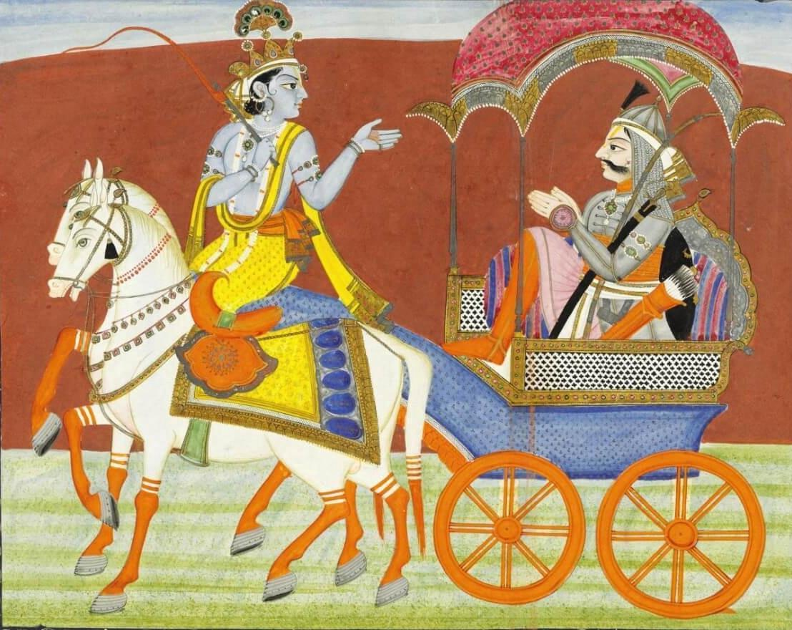

A DIGITAL LITERARY ARCHIVE · 2026
Every book
holds a world.
Welcome to my literary journey — a collection of stories, ideas, and lessons that shaped the way I see literature and life.
A GREAT BOOKS DIGITAL PORTFOLIO
LITERARY
JOURNEY ✧ IMAE METAS
WORDS & WONDER
01 / THE READER
A little about
the person behind the pages.
Every reader brings a different perspective to every story. Here is mine.

READER
02 / THE COLLECTION
Choose a book.
Open a new world.
Seven literary works, each with its own story, background, conflicts, themes, and personal insights. Select a volume to begin reading.

RAMAYANA AN ANCIENT INDIAN EPIC
03 / THE BOOK THAT STAYED
My favorite
literary masterpiece.
Some stories stay with us long after we finish reading. This is the work that became most meaningful to me.
04 / WHAT I CARRY WITH ME
Lessons between
the lines.
A look back at the knowledge, skills, and realizations I gained throughout Great Books.
05 / THE READER'S JOURNAL
Thoughts from
the final chapter.
Reading changes the way we see stories. Reflection changes the way we see ourselves.